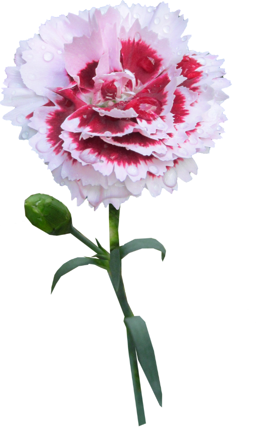
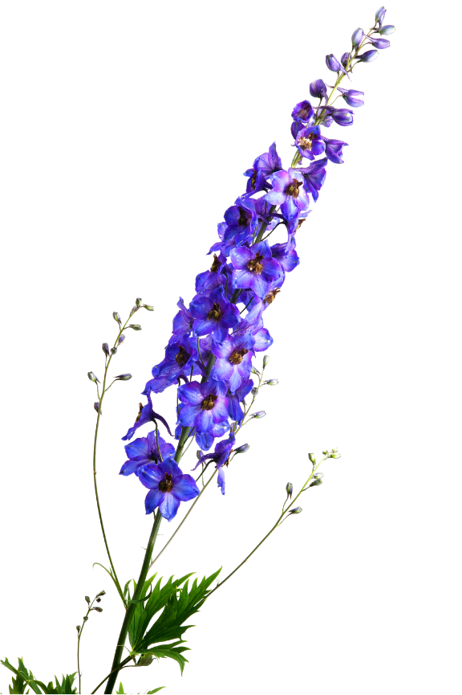
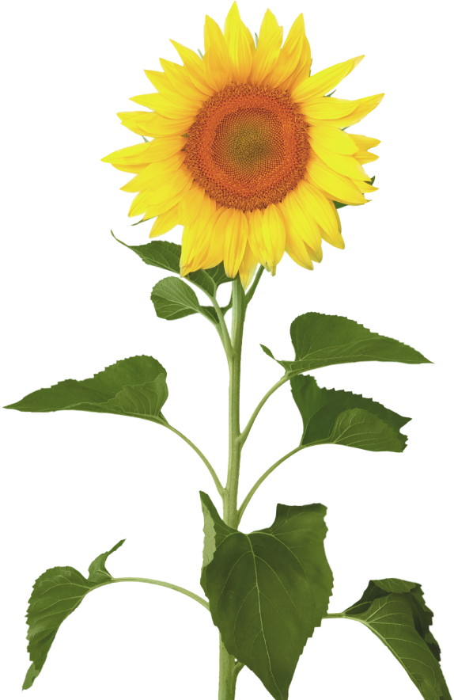
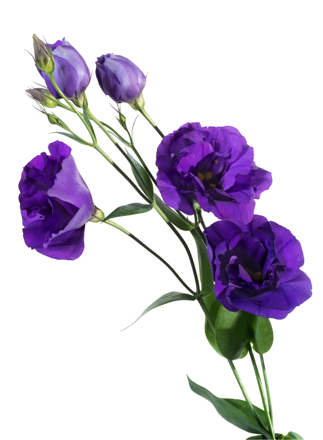
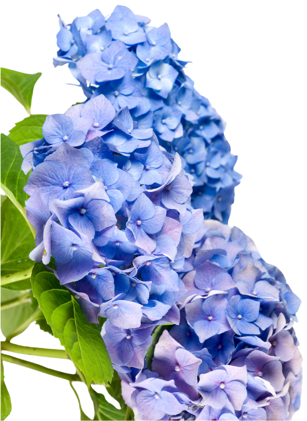

Flora
Lab
Principal
Acerca de
Servicios
Contacto
Nuestro trabajo
Nos ubicamos en

Clavel
El clavel o clavelina (Dianthus caryophyllus) es una planta herbácea perteneciente a la familia de las Caryophyllaceae, es considerada como flor del agua, difundida en las regiones mediterráneas Es espontánea en la flora de la península ibérica.

Delphinium
Delphinium es un género de cerca de 450 especies de plantas anuales, bienales o perennes florales, de la familia Ranunculaceae nativas del hemisferio norte y también de la alta montaña tropical de África.

Girasol
Helianthus annuus, también llamado comúnmente girasol, mirasol, maravilla, maíz de teja, acahual es una planta herbácea anual de la familia de las asteráceas originaria de Centro y Norteamérica

Lisianthus
Eustoma es un género de plantas con flores perteneciente a la familia Gentianaceae, se encuentra en las regiones calurosas del sur de los Estados Unidos, México, Antillas y norte de Sudamérica.

Hortensia
El género Hydrangea incluye plantas ornamentales, comúnmente conocidas como hortensias, nativas del sur y el este de Asia y de América. La mayor diversidad de especies de este género se encuentra en las zonas de China, Corea y Japón.